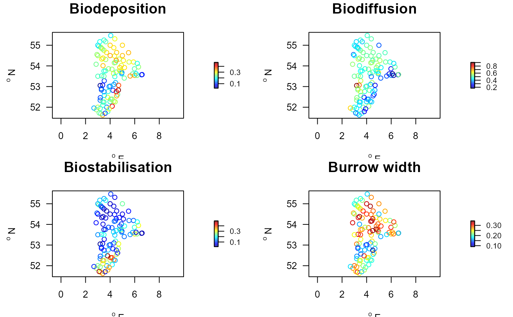

Benthic effect and response trait characteristics, and taxonomy.
Btraitdata.RdMacrofauna species trait information datasets.
Traits_nioz: 32 effect and response traits for benthic macrofauna (Beauchard et al, 2021)
Traits_cefas: 10 effect and response traist for benthic macrofauna (Clare et al, 2022)
Traits_Db: traits to estimate bioturbation potential index (Queiros et al., 2013)
Traits_irr: traits to estimate bioirrigation potential index as in (Wrede et al., 2018)
Taxonomy: taxonomic information for all taxa in the trait and density datasets
Details
**
Traits_nioz** contains 15effectand 15responsetraits of 281 macrobenthos taxa (as in Beauchard et al., 2021), mainly on species level. Traits are fuzzy coded, i.e. modalities can range inbetween 0 and 1, and a taxon can be attributed a score for several modalities. Within a trait, and for a taxon, the scores sum to 1.**
Traits_cefas** contains 10 traits for 1025 macrobenthos taxa (as in Beauchard et al., 2021), mainly on genus level. Traits are fuzzy coded.**
Traits_Db** has the traits for 1094 macrobenthos taxa (as in Queiros et al., 2013), mainly on species level. The original 1032 traits were amended with additional species (as from Ilvo - courtesy Gert van Hoey).**
Traits_irr** has the traits for 281 macrobenthos taxa, necessary to estimate the irrigation potential index as in Wrede et al., 2018. This information has been derived from the Traits_nioz dataset (see last example).**
Taxonomy** has the taxonomic information for all taxa, as derived from WoRMS.
Format
Dataset Taxonomy is a data.frame with column names taxon, genus, family, order, class, phylum and AphiaID.
Dataset Traits_nioz is a data.frame with column names taxon, ET1.M1, ET1.M2, ... RT10.M3, RT10.M4; the latter are the trait modalities, e.g. RT10.M4 is modality 4 for response trait 10.
Dataset Traits_cefas is a data.frame with column names taxon, sr_Less_than_10, sr_11_to_20, sr_21_to_100, sr_101_to_200, ... b_Downward_conveyer, b_None.
Dataset Traits_Db is a data.frame with column names taxon, Ri, Mi Fti and source.
All trait datasets have a data.frame called description in their attributes that explains the meaning of the traits, their modalities and units, and a value and score.
The score is a number between 0 and 1, representing the vulnerability of the taxon to perturbations for response traits, or that relate to the complexity or size for effect traits. For motility: a score from 0 (sessile) to 1 (swimmer) is given; the higher the score, the more mobile the taxon.
The value represents an average value for the modality class. For unitless modalities, it is equal to score.
metadata(Traits_nioz), metadata(Traits_cefas), and metadata(Traits_Db), extract the desciption for the databases; attributes(Traits_nioz)$origin, attributes(Traits_cefas)$origin, and attributes(Traits_Db)$origin, show the source of the data.
For the *** nioz trait database*** ,
Traits_nioz(Beauchard et al., 2021), the followingeffecttraits are included:Substratum depth distribution
ET1.Mx, in cm, with 5 modalities, 0 cm (ET1.M1), 0-5 cm (ET1.M2), 5-15 cm (ET1.M3), 15-30 cm(ET1.M4), and >30 cm (ET1.M5)Biodiffusion
ET2.Mx, the random dispersion of sediment particles by organisms; 3 modalities: Null, (ET2.M1), Low (ET2.M2) and High (ET2.M3).Downward conveying
ET3.Mx, downward displacement of sediment particles (including faeces production); 3 modalities: Null, (ET3.M1), Low (ET3.M2) and High (ET3.M3).Upward conveying
ET4.Mx, upward displacement of sediment particles, mostly by burrying; 3 modalities: Null, (ET4.M1), Low (ET4.M2) and High (ET4.M3).Regeneration
ET5.Mx, instantaneous up-and downward particle displacement, usually done by crabs; 3 modalities: Null, (ET5.M1), Low (ET5.M2) and High (ET5.M3).Biodeposition
ET6.Mx, pelagic-benthic sediment transfer through suspension feeding; 3 modalities: Null, (ET6.M1), Low (ET6.M2) and High (ET6.M3).Bioerosion
ET7.Mx, degradation through animal secretion; 3 modalities: Null, (ET7.M1), Low (ET7.M2) and High (ET7.M3).Biostabilisation
ET8.Mx, activity that mitigates sediment erodability through hydrological modulation (zoic tubes, mounds reefs); 3 modalities: Null, (ET8.M1), Low (ET8.M2) and High (ET8.M3).Ventilation/Pumping
ET9.Mx, generation of water fluxes into the substrate by body or appendix undulation; leads to bioirrigation when combined by burrows and endo-3D structure depth; 3 modalities: Null, (ET9.M1), Low (ET9.M2) and High (ET9.M3).Burrow width
ET10.Mx; with 4 modalities: None, 0 mm (ET10.M1), Narrow <5mm (ET10.M2), Intermediate 5-10mm (ET10.M3) and Wide >10mm (ET10.M4).Endo-3D structure type
ET11.Mx; 7 modalities: None (ET11.M1), Chimney/Funnel (ET11.M2), Tube (ET11.M3), IJ-shaped burrow (ET11.M4), UY-shaped burrow (ET11.M5), Branched burrow (ET11.M6) and Anastomosed burrow (ET11.M7). here chimney/funnel has a respiratory function, tube is constructed from organic or mineral material, UY-shaped differs from IJ shaped by enhancing water flux through bioturbation; similar for anastomosed and branched burrows (generally deep structures);Endo-3D structure depth
ET12.Mx, endobenthic vertical effect size (semi- or permanent burrows), in cm; 5 modalities: None (ET12.M1), 0-5 cm (ET12.M2), 5-15 cm (ET12.M3), 15-30 cm (ET12.M4), >30 cm (ET12.M5)Epi-3D structure type
ET13.Mx, type of epibenthic structure, on top of sediment; 7 modalities: None (ET13.M1), Mat (ET13.M2), Mound (ET13.M3), Tube/Tubular protrusion (ET13.M4), Shell (ET13.M5), Stalk/Feather (ET13.M6), Protuberance (ET13.M7)Epi-3D structure extensions
ET14.xx, type of epibenthic structure aggregations; 5 modalities: None (ET14.M1), Isolated/Clumped (ET14.M2), Mat/Lawn (ET14.M3), Simple reef (ET14.M4), Complex reef (ET14.M5)
The **response traits** and their modalities are:
Body mass
RT1.Mx, in gram ash free dry weight (gADWt); 6 modalities: <0.001 gADWt (RT1.M1), 0.001-0.010 gADWt (RT1.M2), 0.010-0.100 gADWt (RT1.M3), 0.100-1.000 gADWt (RT1.M4), 1.000-10.000 gADWt (RT1.M5), >10.000 gADWt (RT1.M6)Body length
RT2.Mx, in cm; 5 modalities: <1 cm (RT2.M1), 1-3 cm (RT2.M2), 3-10 cm (RT2.M3), 10-20 cm (RT2.M4), 20-50 cm (RT2.M5)Body resistance
RT3.Mx; 5 modalities: Very low (RT3.M1), Low (RT3.M2), Intermediate (RT3.M3), High (RT3.M4), Very high (RT3.M5)Motility
RT4.Mx, 4 modalities: Sessile (RT4.M1), Tubicolous (RT4.M2), Crawler (RT4.M3), Swimmer (RT4.M4)Burrowing/Sheltering depth
RT5.Mx, 4 modalities: 0 cm (RT5.M1), 0-5 cm (RT5.M2), 5-15 cm (RT5.M3), >15 cm (RT5.M4)Feeding type
RT6.Mx; 4 modalities: Deposit feeder (RT6.M1), Suspension feeder (RT6.M2), Herbivore/Grazer (RT6.M3), Carnivore/Scavenger (RT6.M4)Life span
RT7.Mx, time necessary to achieve a life cycle during which at least one reproductive success is ensured, in years; 5 modalities: < 1 yr (RT7.M1), 1-3 yr (RT7.M2), 3-10 yr (RT7.M3), 10-20 yr (RT7.M4), >20 yr (RT7.M5)Age at maturity
RT8.Mx, time after which reproductive successs can be expected, in years; 3 modalities: <1 yr (RT8.M1), 1-3 yr (RT8.M2), 3-5 yr (RT8.M3)Offspring type
RT12.Mx; 3 modalities: Egg (RT12.M1), Larva (RT12.M2), Juvenile (RT12.M3)Offspring size
RT13.Mx, in mm; 4 modalities: <0.1 mm (RT13.M1),0.1-0.5 mm (RT13.M2), 0.5-1.5 mm (RT13.M3), 1.5-5 mm (RT13.M4).
In the *** cefas trait database*** ,
Traits_cefas(Clare et al., 2022), the following traits are included:Maximum size, The maximum size (mm) that the taxon is known to reach during the adult stage,
sr_x, in mm, with 5 modalities:sr_Less_than_10,sr_11_to_20,sr_21_to_100,sr_101_to_200,sr_201_to_500,sr_More_than_500Morphology
m_xxwith 6 modalities:m_Soft,m_Tunic,m_Exoskeleton,m_Crustose,m_Cushion,m_StalkedLifespan, The maximum reported lifespan (years) of the adult stage,
l_xx, with 4 modalities:l_Less_than_1,l_1_to_3,l_3_to_10,l_More_than_10Egg development location,
ed_xx, with 4 modalities:ed_Asexual,ed_Sexual_pelagic,ed_Sexual_benthic,ed_Sexual_broodedLarva development location,
ld_xx, 3 modalities:ld_Pelagic_planktotrophic,ld_Pelagic_lecithotrophic,ld_Benthic_directLiving habit,
lh_xx, 5 modalities:lh_Burrow_dwelling,lh_Free_living,lh_Crevice_hole_under_stones,lh_Epi_endo_biotic,lh_Attached_to_substratumSediment position,
sp_xx, 4 modalities:sp_Surface,sp_Shallow_infauna_0_to_5cm,sp_Mid_depth_infauna_5_to_10cm,sp_Deep_infauna_more_than_10cmFeeding mode,
f_xx, 6 modalities:f_Suspension,f_Surface_deposit,f_Subsurface_deposit,f_Scavenger,f_Predator,f_ParasiteMobility,
mob_xx, 4 modalities:mob_Sessile,mob_Swim,mob_Crawl_creep_climb,mob_BurrowerBioturbation mode,
b_xx, 5 modalities:b_Diffusive_mixing,b_Surface_deposition,b_Upward_conveyor,b_Downward_conveyer,b_None
The *** bioturbation trait database*** ,
Traits_Db(Queiros et al., 2013), contains the *Mi* and *Ri* scores, as well as the reworking types (*Fti*) that are necessary to estimate the bioturbation potential index. Their meaning is:Mi, the mobility scores:
1for organisms that live in fixed tubes;2indicates limited movement;3indicates slow, free movement through the sediment matrix;4indicates free movement, that is, via burrow system.Ri, the reworking scores:
1for epifauna;2for surficial modifiers;3for upward and downward conveyors;4for biodiffusors;5for regenerators.Fti, the reworking types:
Efor epifauna;Sfor surficial modifiers;UCfor upward conveyors;DCfor downward conveyors;Bfor biodiffusors;Rfor regenerators.
References
The NIOZ trait database is described in the following paper:
Beauchard O, Brind'Amour A, Schratzberger M, Laffargue P, Hintzen NT, Somerfield PJ, Piet G (2021) A generic approach to develop a trait-based indicator of trawling-induced disturbance. Mar Ecol Prog Ser 675:35-52. https://doi.org/10.3354/meps13840
The CEFAS trait dataset:
Clare, David S. Bolam, Stefan G. McIlwaine, Paul S.O. Garcia, Clement Murray, Joanna M. Eggleton, Jacqueline D. (2022). Ten key biological traits of marine benthic invertebrates surveyed in Northwest Europe. Cefas, UK. V2. doi: https://doi.org/10.14466/CefasDataHub.123
The bioturbation data:
Ana M. Queiros, Silvana N. R. Birchenough, Julie Bremner, Jasmin A. Godbold, Ruth E. Parker, Alicia Romero-Ramirez, Henning Reiss, Martin Solan, Paul J. Somerfield, Carl Van Colen, Gert Van Hoey, Stephen Widdicombe, 2013. A bioturbation classification of European marine infaunal invertebrates. Ecology and Evolution 3 (11), 3958-3985
The bioirrigation traits:
A. Wrede, J.Beermann, J.Dannheim, L.Gutow, T.Brey, 2018. Organism functional traits and ecosystem supporting services - A novel approach to predict bioirrigation. Ecological indicators, 91, 737-743.
See also
Groups for the benthic typological groups.
MWTL for other data sets of the Northsea.
mapBtrait for plotting.
extendTrait for functions operating on trait data.
getDensity for functions operating on density data.
getTraitDensity for functions operating on density and trait data.
getDbIndex for extracting bioturbation and bioirrigation indices.
Examples
##-----------------------------------------------------
## Show contents of the trait data sets - NIOZ data
##-----------------------------------------------------
traits.lab <- attributes(Traits_nioz)$description
head (traits.lab)
#> colname trait modality indic value score units
#> 1 ET1.M1 Substratum depth distribution 0 1 0.0 1.00 cm
#> 2 ET1.M2 Substratum depth distribution 0-5 1 2.5 0.75 cm
#> 3 ET1.M3 Substratum depth distribution 5-15 1 10.0 0.50 cm
#> 4 ET1.M4 Substratum depth distribution 15-30 1 22.5 0.25 cm
#> 5 ET1.M5 Substratum depth distribution >30 1 30.0 0.00 cm
#> 6 ET2.M1 Biodiffusion Null 2 0.0 0.00 -
unique(traits.lab$trait)
#> [1] "Substratum depth distribution" "Biodiffusion"
#> [3] "Downward conveying" "Upward conveying"
#> [5] "Regeneration" "Biodeposition"
#> [7] "Bioerosion" "Biostabilisation"
#> [9] "Ventilation/Pumping" "Burrow width"
#> [11] "Endo-3D structure type" "Endo-3D structure depth"
#> [13] "Epi-3D structure type" "Epi-3D structure extension"
#> [15] "Epi-3D structure size" "Body mass"
#> [17] "Body length" "Body resistance"
#> [19] "Motility" "Burrowing/Sheltering depth"
#> [21] "Feeding type" "Life span"
#> [23] "Age at maturity" "Reproductive frequency"
#> [25] "Fertilisation" "Annual fecundity"
#> [27] "Offspring type" "Offspring size"
#> [29] "Offspring protection" "Offspring development"
#> [31] "Offspring benthic stage duration" "Offspring pelagic stage duration"
# types of burrows
subset(traits.lab, subset = (trait=="Endo-3D structure type"))
#> colname trait modality indic value score
#> 34 ET11.M1 Endo-3D structure type None 11 0.0000000 0.0000000
#> 35 ET11.M2 Endo-3D structure type Chimney/Funnel 11 0.1666667 0.1666667
#> 36 ET11.M3 Endo-3D structure type Tube 11 0.3333333 0.3333333
#> 37 ET11.M4 Endo-3D structure type IJ-shaped burrow 11 0.5000000 0.5000000
#> 38 ET11.M5 Endo-3D structure type UY-shaped burrow 11 0.6666667 0.6666667
#> 39 ET11.M6 Endo-3D structure type Branched burrow 11 0.8333333 0.8333333
#> 40 ET11.M7 Endo-3D structure type Anastomosed burrow 11 1.0000000 1.0000000
#> units
#> 34 -
#> 35 -
#> 36 -
#> 37 -
#> 38 -
#> 39 -
#> 40 -
# taxa with U- or Y-shaped burrows (ET9M5):
subset(Traits_nioz, subset = ET11.M5 > 0)$taxon
#> [1] "Acrocnida brachiata" "Acteon tornatilis"
#> [3] "Amphiura chiajei" "Amphiura filiformis"
#> [5] "Aoridae" "Arenicola"
#> [7] "Brissopsis lyrifera" "Callianassa"
#> [9] "Callianassa subterranea" "Chaetopterus variopedatus"
#> [11] "Corophium" "Lagis koreni"
#> [13] "Marphysa sanguinea" "Natatolana borealis"
#> [15] "Poecilochaetus serpens" "Polydora"
#> [17] "Prionospio" "Prionospio cirrifera"
#> [19] "Pygospio elegans" "Streblospio"
#> [21] "Streblospio shrubsolii" "Thracia convexa"
#> [23] "Thracia phaseolina" "Thracia pubescens"
#> [25] "Upogebia deltaura" "Upogebia stellata"
##-----------------------------------------------------
## Show contents of the trait data sets - CEFAS data
##-----------------------------------------------------
traits_cefas.lab <- attributes(Traits_cefas)$description
head (traits_cefas.lab)
#> colname trait modality indic value score units
#> 1 sr_Less_than_10 Maximum size <10 1 5 0.0 mm
#> 2 sr_11_to_20 Maximum size 11-20 1 15 0.2 mm
#> 3 sr_21_to_100 Maximum size 21-100 1 60 0.4 mm
#> 4 sr_101_to_200 Maximum size 101-200 1 150 0.6 mm
#> 5 sr_201_to_500 Maximum size 201-500 1 350 0.8 mm
#> 6 sr_More_than_500 Maximum size >500 1 750 1.0 mm
#> description
#> 1 The maximum size (mm) that the taxon is known to reach during the adult stage.
#> 2 The maximum size (mm) that the taxon is known to reach during the adult stage.
#> 3 The maximum size (mm) that the taxon is known to reach during the adult stage.
#> 4 The maximum size (mm) that the taxon is known to reach during the adult stage.
#> 5 The maximum size (mm) that the taxon is known to reach during the adult stage.
#> 6 The maximum size (mm) that the taxon is known to reach during the adult stage.
unique(traits_cefas.lab$trait)
#> [1] "Maximum size" "Morphology"
#> [3] "Lifespan" "Egg development location"
#> [5] "Larva development location" "Living habit"
#> [7] "Sediment position" "Feeding mode"
#> [9] "Mobility" "Bioturbation mode"
# Living habit
subset(traits_cefas.lab, subset = (trait=="Living habit"))
#> colname trait modality indic
#> 24 lh_Tube_dwelling Living habit Tube_dwelling 7
#> 25 lh_Burrow_dwelling Living habit Burrow_dwelling 7
#> 26 lh_Free_living Living habit Free_living 7
#> 27 lh_Crevice_hole_under_stones Living habit Crevice_hole_under_stones 7
#> 28 lh_Epi_endo_biotic Living habit Epi_endo_biotic 7
#> 29 lh_Attached_to_substratum Living habit Attached_to_substratum 7
#> value score units
#> 24 0.0 0.0 -
#> 25 0.2 0.2 -
#> 26 0.4 0.4 -
#> 27 0.6 0.6 -
#> 28 0.8 0.8 -
#> 29 1.0 1.0 -
#> description
#> 24 Adults live in a tube, which may be lined with sand, mucus or calcium carbonate.
#> 25 Adults live in a permanent or temporary burrow.
#> 26 Adults do not inhabit a restrictive structure. Able to move freely within and/or on sediments.
#> 27 Adults typically cryptic and inhabit spaces within coarse/rock substrate or algal holdfasts.
#> 28 Adults live on or in another organism.
#> 29 Adults are attached to coarse substrate or rock.
# taxa that live predominantly in a tube (lh_Tube_dwelling):
subset(Traits_cefas, subset = lh_Tube_dwelling > 0.5)$taxon # more than 50%
#> [1] "Aponuphis" "Paradiopatra" "Panthalis"
#> [4] "Platynereis" "Fabricia" "Acromegalomma"
#> [7] "Branchiomma" "Chone" "Euchone"
#> [10] "Jasmineira" "Laonome" "Perkinsiana"
#> [13] "Pseudopotamilla" "Sabella" "Sabellidae"
#> [16] "Apomatus" "Circeis" "Ditrupa"
#> [19] "Hydroides" "Protula" "Serpula"
#> [22] "Vermiliopsis" "Serpulidae" "Siboglinum"
#> [25] "Poecilochaetus" "Pygospio" "Trochochaeta"
#> [28] "Ampharete" "Amphicteis" "Anobothrus"
#> [31] "Eclysippe" "Lysippe" "Samytha"
#> [34] "Sosane" "Ampharetidae" "Dodecaceria"
#> [37] "Melinna" "Amphictene" "Lagis"
#> [40] "Pectinaria" "Petta" "Pectinariidae"
#> [43] "Amphitrite" "Lanice" "Loimia"
#> [46] "Neoamphitrite" "Nicolea" "Paramphitrite"
#> [49] "Pista" "Pistella" "Streblosoma"
#> [52] "Thelepus" "Terebellides" "Trichobranchus"
#> [55] "Capitella" "Heteromastus" "Mediomastus"
#> [58] "Chaetopterus" "Phyllochaetopterus" "Spiochaetopterus"
#> [61] "Chaetopteridae" "Clymenella" "Clymenura"
#> [64] "Euclymene" "Heteroclymene" "Lumbriclymene"
#> [67] "Maldane" "Microclymene" "Nicomache"
#> [70] "Notoproctus" "Petaloproctus" "Praxillella"
#> [73] "Praxillura" "Rhodine" "Maldanidae"
#> [76] "Galathowenia" "Myriochele" "Owenia"
#> [79] "Oweniidae" "Lygdamis" "Sabellaria"
#> [82] "Ampelisca" "Byblis" "Haploops"
#> [85] "Ampeliscidae" "Ampithoe" "Lembos"
#> [88] "Microdeutopus" "Crassicorophium" "Monocorophium"
#> [91] "Protomedeia" "Ericthonius" "Jassa"
#> [94] "Siphonoecetes" "Ischyroceridae" "Microprotopus"
#> [97] "Gammaropsis" "Photis" "Tanais"
#> [100] "Phascolion"
##-----------------------------------------------------
## Feeding type - NIOZ data
##-----------------------------------------------------
FT <- subset(traits.lab, trait=="Feeding type")
FT
#> colname trait modality indic value score units
#> 88 RT6.M1 Feeding type Deposit feeder 6 0.0000000 0.0000000 -
#> 89 RT6.M2 Feeding type Suspension feeder 6 0.3333333 0.3333333 -
#> 90 RT6.M3 Feeding type Herbivore/Grazer 6 0.6666667 0.6666667 -
#> 91 RT6.M4 Feeding type Carnivore/Scavenger 6 1.0000000 1.0000000 -
head(Traits_nioz[,c("taxon", FT$colname)])
#> taxon RT6.M1 RT6.M2 RT6.M3 RT6.M4
#> 1 Abludomelita 1.0 0.0 0 0
#> 2 Abludomelita obtusata 1.0 0.0 0 0
#> 3 Abra alba 0.5 0.5 0 0
#> 4 Abra nitida 0.5 0.5 0 0
#> 5 Abra prismatica 0.5 0.5 0 0
#> 6 Abra tenuis 0.5 0.5 0 0
# Select for all taxa the feeding type to which they belong
FTspec <- apply(Traits_nioz[ ,FT$colname],
MARGIN = 2, # apply on columns
FUN = function(x) Traits_nioz$taxon[x>0])
names(FTspec) <- FT$modality
FTspec$"Herbivore/Grazer"
#> [1] "Alitta virens" "Apherusa" "Aplysia"
#> [4] "Caprellidae" "Carcinus maenas" "Echinus esculentus"
#> [7] "Gammarus" "Lepidonotus squamatus" "Liocarcinus"
#> [10] "Liocarcinus holsatus" "Marphysa sanguinea" "Nereis"
#> [13] "Ophryotrocha" "Pagurus bernhardus" "Paraonis fulgens"
#> [16] "Portumnus latipes" "Psammechinus miliaris" "Pygospio elegans"
#> [19] "Schistomysis"
## Number of occurrences of feeding types
FTtable <- apply(Traits_nioz[,FT$colname],
MARGIN = 2,
FUN = function(x) sum(x>0))
data.frame(FT$modality, numberOfOccurrences = FTtable)
#> FT.modality numberOfOccurrences
#> RT6.M1 Deposit feeder 149
#> RT6.M2 Suspension feeder 117
#> RT6.M3 Herbivore/Grazer 19
#> RT6.M4 Carnivore/Scavenger 93
##-----------------------------------------------------
## Feeding type - CEFAS data
##-----------------------------------------------------
FT_cefas <- subset(traits_cefas.lab, trait== "Feeding mode")
FT_cefas
#> colname trait modality indic value score units
#> 34 f_Suspension Feeding mode Suspension 9 0.0 0.0 -
#> 35 f_Surface_deposit Feeding mode Surface_deposit 9 0.2 0.2 -
#> 36 f_Subsurface_deposit Feeding mode Subsurface_deposit 9 0.4 0.4 -
#> 37 f_Scavenger Feeding mode Scavenger 9 0.6 0.6 -
#> 38 f_Predator Feeding mode Predator 9 0.8 0.8 -
#> 39 f_Parasite Feeding mode Parasite 9 1.0 1.0 -
#> description
#> 34 Feeds on particulate food resources suspended in the water column.
#> 35 Feeds on detritus (including algal material) on the sediment surface.
#> 36 Feeds on detritus located within the sediment matrix.
#> 37 Feeds on dead animals (carrion).
#> 38 Actively predates on animals (including small zooplankton).
#> 39 Derives nutrition from its host organism.
FT_cefasSpec <- apply(Traits_cefas[ ,FT_cefas$colname],
MARGIN = 2, # apply on columns
FUN = function(x) Traits_cefas$taxon[x>0])
names(FT_cefasSpec) <- FT_cefas$modality
FT_cefasSpec$"Parasite"
#> [1] "Drilonereis" "Notocirrus" "Oenonidae" "Rhodinicola"
#> [5] "Notodelphys" "Melinnacheres" "Epimeria" "Metopa"
#> [9] "Parametopa" "Stenothoe" "Stenula" "Stenothoidae"
#> [13] "Pinnotheres" "Pseudione" "Bopyridae" "Cirolana"
#> [17] "Cirolanidae" "Gnathia" "Ione" "Isopoda"
#> [21] "Galatheascus" "Triangulus" "Eulima" "Melanella"
#> [25] "Vitreolina" "Brachystomia" "Odostomia" "Pyramidellidae"
## number of occurrences
FTtable_cefas <- apply(Traits_cefas[,FT_cefas$colname],
MARGIN = 2,
FUN = function(x) sum(x>0))
data.frame(FT_cefas$modality, numberOfOccurrences = FTtable_cefas)
#> FT_cefas.modality numberOfOccurrences
#> f_Suspension Suspension 488
#> f_Surface_deposit Surface_deposit 346
#> f_Subsurface_deposit Subsurface_deposit 147
#> f_Scavenger Scavenger 230
#> f_Predator Predator 385
#> f_Parasite Parasite 28
##-----------------------------------------------------
## Community mean weighted score.
## Traits from all taxa in the dataset, yearly averaged
##-----------------------------------------------------
trait.lab <- attributes(Traits_nioz)$description
# traits are extended with taxonomic information (via taxonomy),
# and converted to crisp values (by passing trait.class, trait.score)
cwm.weight.score <- with (MWTL$density,
getTraitDensity(descriptor = station,
taxon = taxon,
value = density,
averageOver = year,
trait = Traits_nioz,
taxonomy = Taxonomy,
trait.class = trait.lab$trait,
trait.score = trait.lab$score,
scalewithvalue = TRUE))
head(cwm.weight.score, n=c(3,4))
#> descriptor Age.at.maturity Annual.fecundity Biodeposition
#> 1 BREEVTN02 0.3292563 0.3976374 0.2097908
#> 2 BREEVTN03 0.3214742 0.4633356 0.1636630
#> 3 BREEVTN04 0.1273492 0.3011162 0.1416944
Stations.traits <- merge(MWTL$stations, cwm.weight.score,
by.x="station", by.y="descriptor")
par(mfrow=c(2,2))
with(Stations.traits, mapBtrait(x, y, colvar=Biodeposition,
main="Biodeposition"))
with(Stations.traits, mapBtrait(x, y, colvar=Biodiffusion,
main="Biodiffusion"))
with(Stations.traits, mapBtrait(x, y, colvar=Biostabilisation,
main="Biostabilisation"))
with(Stations.traits, mapBtrait(x, y, colvar=Burrow.width,
main="Burrow width"))

##-----------------------------------------------------
## Deriving the bio-irrigation traits from the NIOZ dataset
##-----------------------------------------------------
# the burrow types are derived from the nioz traits "Endo-3D structure type",
# the injection depth from traits "Endo-3D structure depth"
# the feeding type is derived from the nioz traits "Feeding type".
# traits and modalities in Traits_nioz usable for bio-irrigation estimates
Irr.meta <- rbind(
subset(metadata(Traits_nioz), subset = trait == "Endo-3D structure type"), #BT
subset(metadata(Traits_nioz), subset = trait == "Endo-3D structure depth"), #ID
subset(metadata(Traits_nioz), subset = trait == "Feeding type")) #FT
# Add irrigation scores
Irr.meta$IR.type <- c(rep("BT", times=7), rep("ID", times=5), rep("FT", times=4))
Irr.meta$IR.value <- c(1, 1, 1, 2, 2, 3, 3, 1, 2, 3, 4, 4, 3, 2, 1, 1)
# Show the metadata usable together with Traits_nioz
Irr.meta[, c(1:3,8:9)]
#> colname trait modality IR.type IR.value
#> 34 ET11.M1 Endo-3D structure type None BT 1
#> 35 ET11.M2 Endo-3D structure type Chimney/Funnel BT 1
#> 36 ET11.M3 Endo-3D structure type Tube BT 1
#> 37 ET11.M4 Endo-3D structure type IJ-shaped burrow BT 2
#> 38 ET11.M5 Endo-3D structure type UY-shaped burrow BT 2
#> 39 ET11.M6 Endo-3D structure type Branched burrow BT 3
#> 40 ET11.M7 Endo-3D structure type Anastomosed burrow BT 3
#> 41 ET12.M1 Endo-3D structure depth None ID 1
#> 42 ET12.M2 Endo-3D structure depth 0-5 ID 2
#> 43 ET12.M3 Endo-3D structure depth 5-15 ID 3
#> 44 ET12.M4 Endo-3D structure depth 15-30 ID 4
#> 45 ET12.M5 Endo-3D structure depth >30 ID 4
#> 88 RT6.M1 Feeding type Deposit feeder FT 3
#> 89 RT6.M2 Feeding type Suspension feeder FT 2
#> 90 RT6.M3 Feeding type Herbivore/Grazer FT 1
#> 91 RT6.M4 Feeding type Carnivore/Scavenger FT 1
cnames <- c("taxon", Irr.meta$colname) # columns to be extracted from Traits_nioz
Irr.traits <- fuzzy2crisp(trait = Traits_nioz[, cnames],
trait.class = Irr.meta$IR.type,
trait.score = Irr.meta$IR.value)
# metadata
Irr.traits.meta <- data.frame(
trait = c(rep("BT", times=3), rep("ID", times=4), rep("FT", times=4),
modality = c(1:3 , 1:4 , 1:4),
description= c("epifauna, internal irrigation (e.g. siphons)",
"open irrigation (e.g. U- or Y- shaped burrows)",
"blind ended irrigation",
"injection pocket 0-2cm", "injection pocket 2-5cm",
"injection pocket 5-10cm", "injection pocket >10 cm depth",
"surface filter feeders", "predators",
"deposit feeders", "sub surface filter feeders")))
attributes(Irr.traits)$description <- Irr.traits.meta